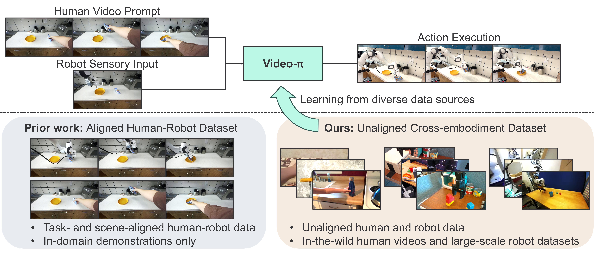
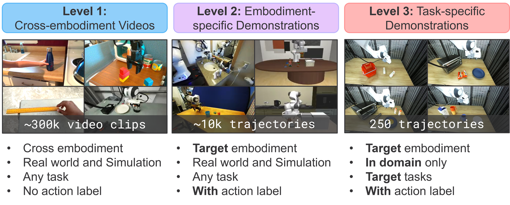
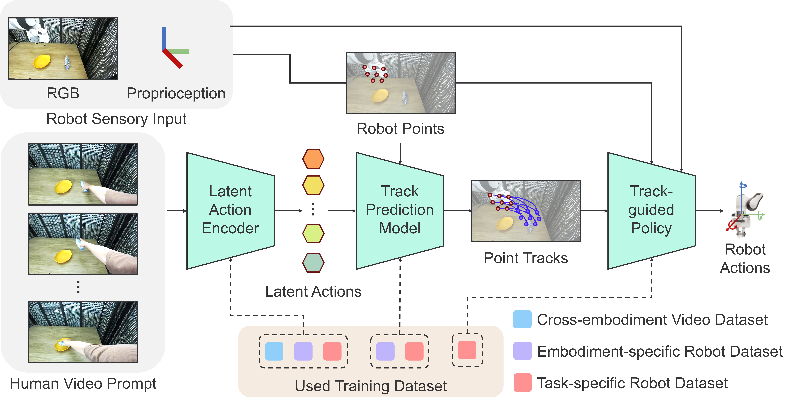
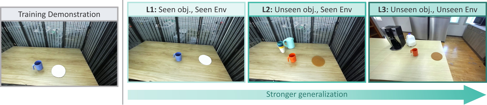

Video-conditioned policies offer an intuitive way to enable task generalization without new data collection or model fine-tuning. However, learning these policies typically requires aligned human-robot data, where demonstrations must be temporally synchronized or recorded for identical tasks in the same environmental setting. We present Video-π, a hierarchical framework designed to learn from unaligned, cross-embodiment data. Our approach decomposes the task into three specialized modules: a Latent Action Encoder, a Track Prediction Model, and a Track-guided Policy. This hierarchy enables Video-π to effectively leverage diverse and unaligned data sources such as in-the-wild human videos and large-scale robotic datasets. Experimental results demonstrate that our method achieves superior generalization against all baselines across both seen and unseen environments and motions.
Video-π is a video-conditioned policy that takes a human prompt video and robot sensory observations as input, enabling the robot to execute tasks by following the motion demonstrated in the video. Prior methods require aligned data, where human and robot demonstrations must be temporally synchronized and recorded for the same task in the same scene. In contrast, our framework removes this constraint, leveraging in-the-wild human videos and large-scale robotic datasets.

Video-π leverages diverse data sources organized into three hierarchical levels based on their degree of constraint and annotation, ordered from the broadest to the most task-specific.
None of these sources suffices on its own, due to missing action labels or the lack of aligned cross-embodiment videos. Combined hierarchically, they provide complementary supervision that grounds high-level human intent into executable robot actions without any aligned human-robot data.

Given a human demonstration video as input, the Latent Action Encoder extracts motion-level priors represented as a sequence of latent actions. The Track Prediction Model then combines these latent actions with the robot’s proprioceptive points (the 2D gripper points in the image frame) to predict future tracks, i.e., trajectories of 2D points across the image frame. Conditioned on the predicted tracks and real-time sensory observations, the Track-Guided Policy generates closed-loop control actions for the robot. As shown in the lower section, each module is trained on a different data level: the Latent Action Encoder on the cross-embodiment video dataset, the Track Prediction Model on the embodiment-specific dataset, and the Track-Guided Policy on the task-specific dataset.

The primary objective of this benchmark is to evaluate the task generalization of various baselines under unseen, out-of-distribution scenarios. The benchmark defines three progressively challenging levels of generalization, denoted as L1 through L3, based on the novelty of object instances and environmental scenes.

We further evaluate zero-shot generalization to novel object-motion combinations, spanning both seen and unseen objects. By learning fundamental motion primitives from diverse human videos, Video-π grounds high-level visual cues into executable low-level robotic actions, even when a specific pairing of motion type and object instance never appears in the robot data.